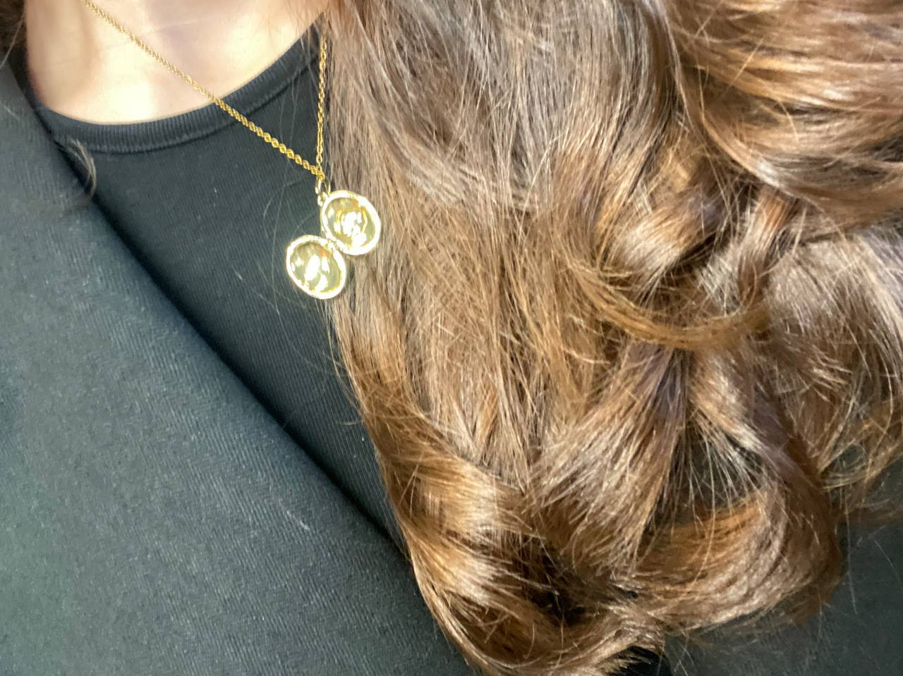

Айока
Есть слова, которые мне следовало сказать иначе. И слова, которые я очень хочу сказать сейчас
Открыть моё письмо ♡Прости меня
Айока, я был неправ, когда грубо сказал тебе, что ты мне надоела
Эти слова были жестокими и несправедливыми. Я понимаю, что мог сделать тебе больно и заставить сомневаться в том, насколько ты для меня важна
Я не хочу оправдываться настроением, усталостью или эмоциями. За то, что я сказал, отвечаю я. Я виноват, я виноват, я понимаю, я виноват
Ты заслуживаешь нежности, уважения и спокойствия рядом со мной даже тогда, когда нам непросто
Мне очень жаль. Я хочу научиться говорить о сложном бережно, слушать тебя и не ранить словами. Я понимаю, что доверие возвращается не красивыми обещаниями, а поступками
Я люблю тебя. И я не прошу тебя забыть всё сразу. Просто хочу, чтобы ты знала: я осознаю свою ошибку и хочу стать лучше в том, как отношусь к тебе. Потому что ты ЗАСЛУЖИВАЕШЬ этого
Твой Амоня♡
«Я помню, любимая, помню»
Я помню, любимая, помню
Сиянье твоих волос.
Не радостно и не легко мне
Покинуть тебя привелось
Сергей Есенин «Я помню, любимая, помню»
Частичка меня рядом с тобой ♡

Маленький подарок, в котором гораздо больше чувств, чем может показаться. Я подарил тебе этот кулон, чтобы у тебя было что-то, напоминающее обо мне, даже когда меня нет рядом
Ты мне дорога, Айока
Я не могу отменить сказанное. Но могу сделать так, чтобы мои следующие слова и поступки были бережнее
Спасибо, что прочитала это письмо. Я уважаю твои чувства и дам тебе столько времени, сколько нужно
С любовью, Мика